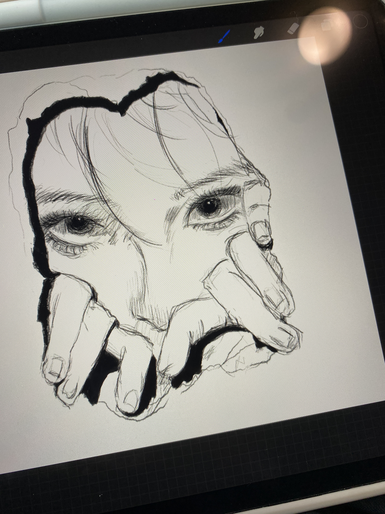
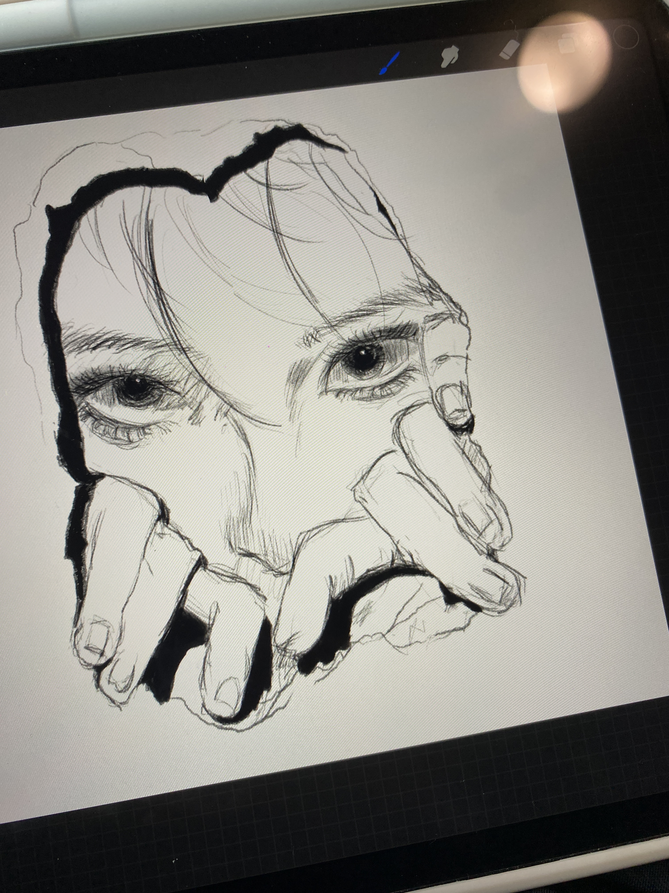

Liuying Chen
Welcome to my personal website!
Here, you can learn more about me, my interests, education, and how to get in touch.

About Me
Hi, my name is Liying Chen. I was born in China and moved to Philadelphia when I was eleven, and this experience shaped how I see the world and who I am today.. I currently live in State College, Pennsylvania for school, but I return to Philadelphia during breaks.
As an introverted person, I enjoy hobbies that let me express myself quietly and creatively, such as badminton, dance, and drawing. These activities have stayed with me through different stages of my life and continue to be meaningful parts of my routine.
I enjoy learning new skills, exploring different creative outlets, and finding small ways to grow while staying true to myself.
My Interests
Drawing
 

I have loved drawing since I was little, even though I never received formal training. I began by sketching freely on paper for fun, and later took an art class in high school where I learned more techniques and completed my first full artwork. I then started exploring digital art with a drawing tablet, and eventually moved to using my iPad and Procreate. Drawing has become a creative outlet for me, and I enjoy experimenting with both traditional and digital styles.
Badminton

I started playing badminton in my high school club, where I first learned the rules and developed my basic skills. Over time, I improved enough to play as my school’s first doubles team and competed in inter-school tournaments across Philadelphia. These experiences made me truly fall in love with the sport. Even after entering college, badminton has remained an important part of my life, and I still try to play almost every week.
Dance

I have enjoyed dancing since I was young, beginning with Chinese dance and traditional ethnic styles. Although I didn’t continue those forms later on, I rediscovered my passion for dance in high school when I became interested in K-pop. I joined a dance class to keep learning and later performed on stage as part of my school club. When I entered college, I didn’t want to give up this hobby, so I continued dancing and participated in the dance club there as well.
My Education
Pennsylvania State University
Bachelor of Science in Accounting and Finance
Graduation Year: 2027
Campus: University Park, Pennsylvania
Relevant Coursework: Financial Accounting, Financial Management, Corporate Finance, Business Analytics
Contact Me
If you'd like to get in touch, feel free to reach out via: